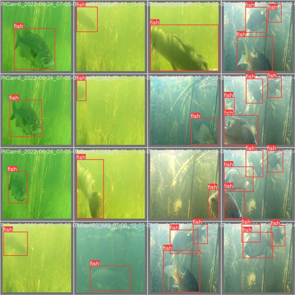
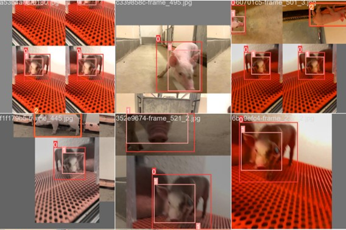

My Projects

Monitoring Freshwater Fish using Computer Vision
Using computer vision to detect and classify freshwater Midwestern river fish from underwater footage
Codon Local and Global Alignment
An implementation of Local and Global Alignment that converts a nucleotide sequence to codons before alignment using the Smith-Waterman and Needleman-Wunsch Algorithms

Swine Detection and Individual Identification
Development of a computer vision model to detect and identify individual pigs in a litter as they grow from birth to finishing (6mo)